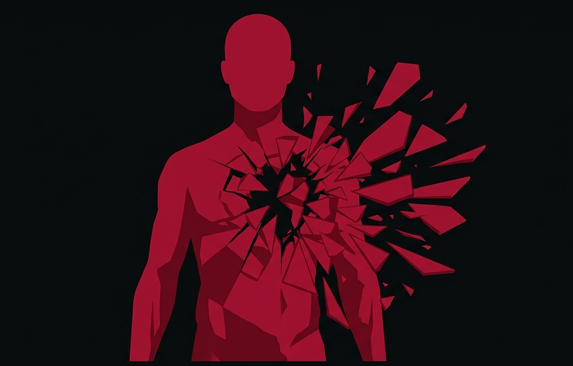

I.A.M.I.
The mirror of the absurd in this unworthy world.
// Fragments of Consciousness
1. The echo of your social laughter distorts when:
The silence of others exposes my performance.
I catch myself imitating my own persona mechanically.
I realize that laughing is the only language they have left.
2. Within the architecture of this void, you position yourself as:
A static shadow documenting the absolute collapse.
A prey fully aware of the strings that pull it forward.
A hunter concealing its fractures behind an imposing mantle.
3. When mutating your inner perspective, the deepest abyss is:
Accepting the innate resilience of my own living matter.
Becoming the executioner of my original desires.
Discovering that my existence plays out as irrelevant text.
4. Facing the constant flow of water and vastness, you perceive:
A peaceful assimilation; I belong to this chaotic order.
A geometric panic before my absolute physical insignificance.
The cold indifference of a nature that does not recognize me.
5. When the contours of external faces fade away into darkness:
I navigate the codes of identity without any friction.
Features blur into an untranslatable, heavy smear.
I acknowledge that I only see masks reflecting my own face.
6. The human urgency to structure sound and art stems from:
A pulse of pure empathy meant to break the isolation.
A desperate scream to temporarily suspend oblivion.
A simple attempt to camouflage the stillness of the surrounding environment.
7. When tracing the symmetry of your two opposing halves:
I reconcile the particles in a dynamic, imperfect balance.
I fluctuate eternally between omnipotence and absolute collapse.
I choose to ignore the half that threatens to dismantle the whole.
Deconstruct Identity
// Mirror of Decomposition
MASK METRIC PROFILE:
AWAITING CONSCIOUSNESS DATA...